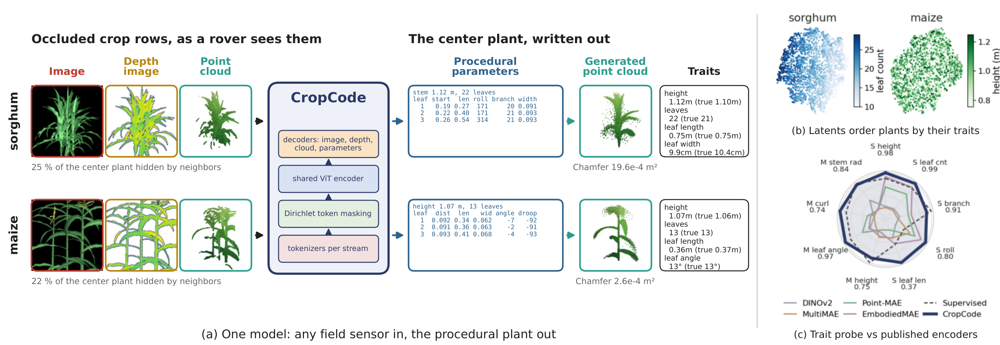
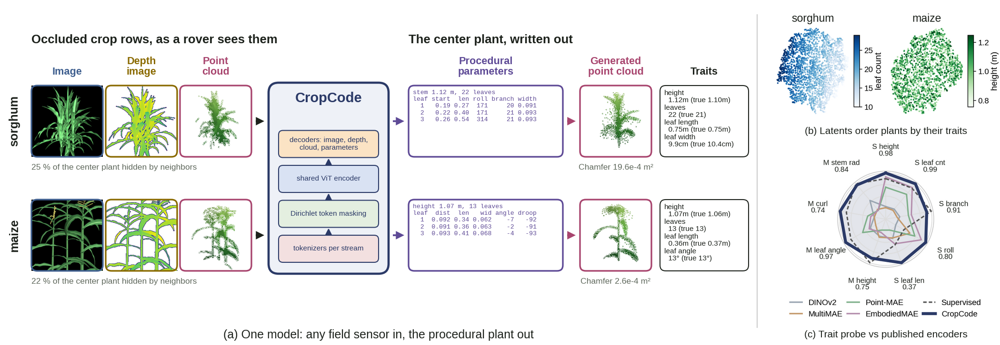
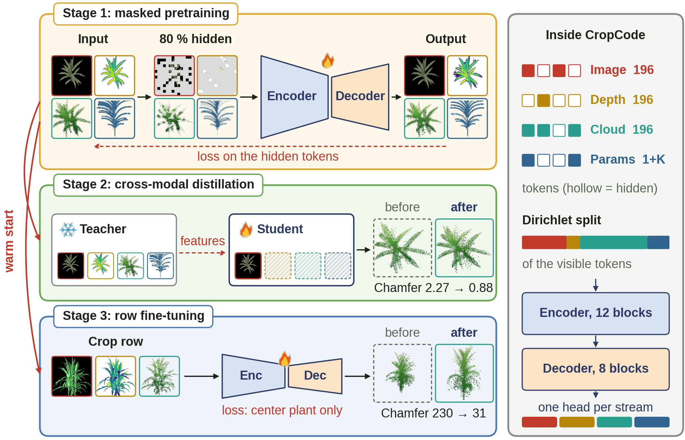
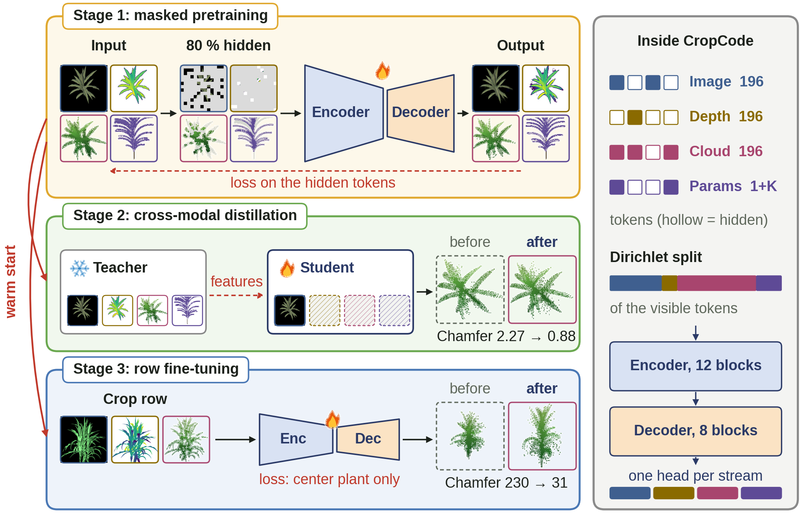
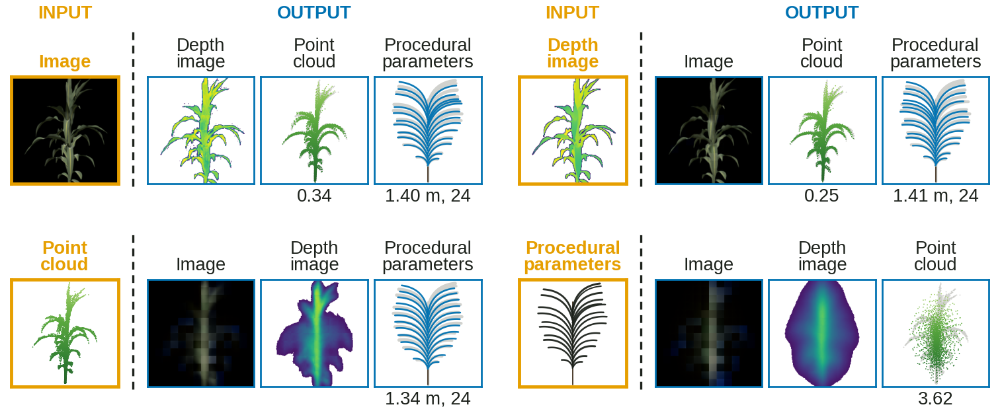

<title>UGG Style Figures</title>
<meta name="claude:viewport-fit-sides" content="cover">
<link rel="stylesheet" href="https://fonts.googleapis.com/css2?family=Space+Grotesk:wght@500;600;700&family=IBM+Plex+Sans:wght@400;500;600&family=IBM+Plex+Mono:wght@400;500&display=swap">
<style>
  /* Layout: a centred project-page column (UGG's page conventions); each figure sits in a framed figbox, with a
     toggle for side by side / current only / UGG style only. Stream colours are the four used in the new figures. */
  :root {
    --bg: #ffffff; --surface: #f7f7f9; --surface-2: #ececef; --line: #e3e3e6; --text: #15171a; --dim: #5b6169;
    --s-rgb: #809ec2; --s-depth: #e0b020; --s-pc: #d091a7; --s-text: #9d8cc4; --focus: #3f5f8f;
    --display: "Space Grotesk", ui-sans-serif, system-ui, sans-serif;
    --body: "IBM Plex Sans", ui-sans-serif, system-ui, sans-serif;
    --mono: "IBM Plex Mono", ui-monospace, Menlo, monospace;
  }
  @media (prefers-color-scheme: dark) { :root:not([data-theme="light"]) {
    --bg: #111214; --surface: #1a1b1e; --surface-2: #26272b; --line: #2e3035; --text: #ececef; --dim: #a3a8b0; --focus: #a9c0e0; color-scheme: dark } }
  :root[data-theme="dark"] {
    --bg: #111214; --surface: #1a1b1e; --surface-2: #26272b; --line: #2e3035; --text: #ececef; --dim: #a3a8b0; --focus: #a9c0e0; color-scheme: dark }
  * { box-sizing: border-box; }
  body { margin: 0; background: var(--bg); color: var(--text); font-family: var(--body); font-size: 16px; line-height: 1.6;
         padding-left: max(16px, env(safe-area-inset-left, 0px)); padding-right: max(16px, env(safe-area-inset-right, 0px)); }
  main { max-width: 1240px; margin: 0 auto; padding-block: 56px 88px; display: grid; gap: 64px; }
  h1, h2 { font-family: var(--display); font-weight: 600; margin: 0; text-align: center; text-wrap: balance; letter-spacing: -0.01em; }
  h1 { font-size: clamp(32px, 5vw, 50px); line-height: 1.08; }
  h2 { font-size: clamp(22px, 2.8vw, 30px); line-height: 1.2; }
  h2::before { content: ""; display: block; width: 44px; height: 3px; border-radius: 2px; margin: 0 auto 16px;
               background: linear-gradient(90deg, var(--s-rgb), var(--s-depth), var(--s-pc), var(--s-text)); }
  p { margin: 0 auto; max-width: 70ch; text-align: center; color: var(--dim); }
  .k { font-family: var(--mono); font-size: 12px; letter-spacing: .12em; text-transform: uppercase; color: var(--dim); text-align: center; }
  header { display: grid; gap: 14px; }
  .bar { display: flex; justify-content: center; position: sticky; top: env(safe-area-inset-top, 0px); z-index: 5; padding-block: 10px;
         background: color-mix(in srgb, var(--bg) 88%, transparent); backdrop-filter: blur(8px); }
  body::before { content: ""; position: fixed; inset: 0 0 auto; height: env(safe-area-inset-top, 0px); z-index: 10; background: var(--bg); }
  .seg { display: inline-flex; flex-wrap: wrap; justify-content: center; border: 1px solid var(--line); border-radius: 9px; padding: 3px; background: var(--bg); }
  .seg button { font-family: var(--mono); font-size: 12.5px; padding: 8px 15px; border-radius: 6px; border: 0; background: transparent; color: var(--dim); cursor: pointer; }
  .seg button[aria-pressed="true"] { background: var(--surface-2); color: var(--text); }
  .seg button:focus-visible { outline: 2px solid var(--focus); outline-offset: 2px; }
  section { display: grid; gap: 18px; }
  .pair { display: grid; gap: 18px; grid-template-columns: minmax(0, 1fr); }
  body[data-mode="both"] .pair { grid-template-columns: minmax(0, 1fr) minmax(0, 1fr); }
  @media (max-width: 900px) { body[data-mode="both"] .pair { grid-template-columns: minmax(0, 1fr); } }
  figure { margin: 0; display: grid; gap: 10px; min-width: 0; align-content: start; }
  .figbox { border: 1px solid var(--line); border-radius: 14px; padding: 16px; background: #ffffff; box-shadow: 0 18px 40px -30px rgba(0,0,0,.35); }
  .figbox img { display: block; width: 100%; max-width: 100%; height: auto; border-radius: 5px; }
  figcaption { font-family: var(--mono); font-size: 12px; letter-spacing: .06em; color: var(--dim); text-align: center; }
  figure.ugg figcaption { color: var(--text); }
  body[data-mode="paper"] figure.ugg, body[data-mode="ugg"] figure.paper { display: none; }
  .legend { display: flex; flex-wrap: wrap; justify-content: center; gap: 8px 18px; font-size: 14px; color: var(--dim); }
  .sw { display: inline-block; width: 14px; height: 14px; border-radius: 4px; vertical-align: -2px; margin-right: 6px; border: 1.5px solid; }
  .notes { background: var(--surface); border: 1px solid var(--line); border-radius: 14px; padding: 24px; display: grid; gap: 12px; }
  .notes ul { margin: 0 auto; padding-left: 20px; display: grid; gap: 6px; max-width: 80ch; color: var(--dim); }
</style>

<main>
  <header>
    <div class="k">CropCode · paper figures</div>
    <h1>Our figures with ideas from the UGG paper</h1>
    <p>Ideas taken from the figures of <i>UGG: Unified Generative Geometry Model</i> (NeurIPS 2026): one soft colour per stream, each item in a rounded box, inputs dashed and outputs solid, grey arrows. The type stays the font of our earlier figures (Liberation Sans, Arial metrics). The data, plants and numbers are the paper's. Nothing has been swapped into the paper yet.</p>
    <div class="legend" aria-label="Stream colours">
      <span><i class="sw" style="background:#e6ecf3;border-color:#809ec2"></i>Image</span>
      <span><i class="sw" style="background:#faf2d4;border-color:#e0b020"></i>Depth image</span>
      <span><i class="sw" style="background:#f6e9ed;border-color:#d091a7"></i>Point cloud</span>
      <span><i class="sw" style="background:#eae7f2;border-color:#9d8cc4"></i>Procedural parameters</span>
    </div>
  </header>

  <div class="bar"><div class="seg" id="mode" role="group" aria-label="Which version to show">
    <button type="button" data-v="both" aria-pressed="true">Side by side</button>
    <button type="button" data-v="paper" aria-pressed="false">Current paper</button>
    <button type="button" data-v="ugg" aria-pressed="false">UGG ideas</button>
  </div></div>

  <section aria-labelledby="h-f1">
    <h2 id="h-f1">Fig. 1 · Overview</h2>
    <p>UGG stream colours on the overview diagram; layout and font unchanged.</p>
    <div class="pair">
      <figure class="paper"><div class="figbox"></div><figcaption>Current draft</figcaption></figure>
      <figure class="ugg"><div class="figbox"></div><figcaption>UGG ideas, our font</figcaption></figure>
    </div>
  </section>

  <section aria-labelledby="h-f2">
    <h2 id="h-f2">Fig. 2 · Three training stages</h2>
    <p>UGG stream colours; layout and font unchanged.</p>
    <div class="pair">
      <figure class="paper"><div class="figbox"></div><figcaption>Current paper</figcaption></figure>
      <figure class="ugg"><div class="figbox"></div><figcaption>UGG ideas, our font</figcaption></figure>
    </div>
  </section>

  <section aria-labelledby="h-f9">
    <h2 id="h-f9">Fig. 9 · Crop rows</h2>
    <p>Input photo in a dashed image box, the true center plant in a grey box, the row-trained reconstruction in a solid point-cloud box with its Chamfer distance (×10⁻⁴ m²).</p>
    <div class="pair">
      <figure class="paper"><div class="figbox"></div><figcaption>Current paper</figcaption></figure>
      <figure class="ugg"><div class="figbox"></div><figcaption>UGG ideas, our font</figcaption></figure>
    </div>
  </section>

  <section aria-labelledby="h-f11">
    <h2 id="h-f11">Fig. 11 · Any input to all, maize</h2>
    <p>Each block: one input stream (dashed), a grey arrow, the three streams generated from it (solid).</p>
    <div class="pair">
      <figure class="paper"><div class="figbox"></div><figcaption>Current paper</figcaption></figure>
      <figure class="ugg"><div class="figbox"></div><figcaption>UGG ideas, our font</figcaption></figure>
    </div>
  </section>

  <section aria-labelledby="h-f12">
    <h2 id="h-f12">Fig. 12 · Any input to all, sorghum</h2>
    <p>Plant 7712, view 05, the same layout as Fig. 11.</p>
    <div class="pair">
      <figure class="paper"><div class="figbox"></div><figcaption>Current paper</figcaption></figure>
      <figure class="ugg"><div class="figbox"></div><figcaption>UGG ideas, our font</figcaption></figure>
    </div>
  </section>

  <section class="notes" aria-labelledby="h-notes">
    <h2 id="h-notes">What changes, what stays</h2>
    <ul>
      <li>Same plants, numbers, font (Liberation Sans) and 9 pt text as the paper's figures.</li>
      <li>Stream colours follow UGG: image blue, depth yellow, point cloud pink, parameters purple. Predicted points use Okabe-Ito reddish purple, which stays distinct from the grey truth for colour-blind readers.</li>
      <li>Swapping into the paper is one command per figure; captions need a word on the box colours.</li>
    </ul>
  </section>
</main>

<script>
  (function () {
    const seg = document.getElementById('mode');
    function set(v) { document.body.dataset.mode = v; seg.querySelectorAll('button').forEach(b => b.setAttribute('aria-pressed', String(b.dataset.v === v))); }
    seg.addEventListener('click', e => { const b = e.target.closest('button'); if (b) set(b.dataset.v); });
    set('both');
  })();
</script>
